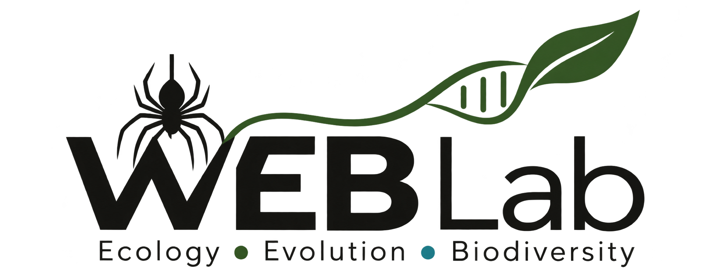

Long-term biodiversity change
Combining molecular methods, biological archives, and ecological time series to study biodiversity change across decades.

Postdoctoral Researcher, UC Berkeley
Molecular ecology, eDNA, arthropods, and island biodiversity
I am a postdoctoral researcher at UC Berkeley working at the intersection of molecular ecology, field biology, and biodiversity monitoring. My research uses environmental DNA, metabarcoding, and natural DNA samplers to study arthropods, spiders, invasive species, and ecological change across island and forest ecosystems.
Current focus
Combining molecular methods, biological archives, and ecological time series to study biodiversity change across decades.
Studying arthropod communities, spiders, invasive species, and plant-arthropod interactions across Hawaiian forest ecosystems.
Developing leaf-derived eDNA, leaf litter eDNA, gut-content metabarcoding, and museum-derived sampling approaches.